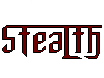
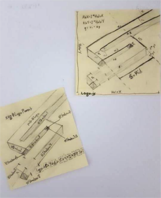
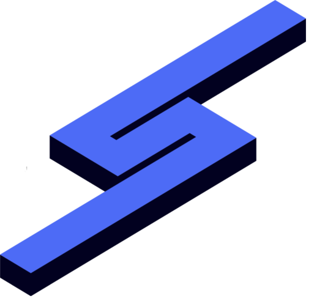
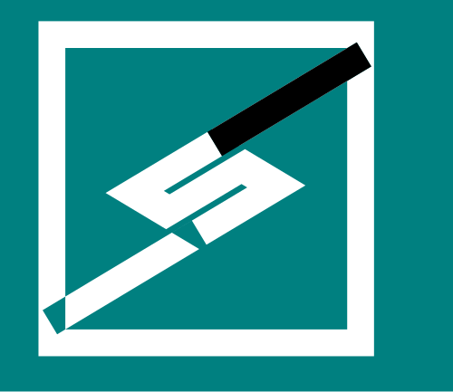
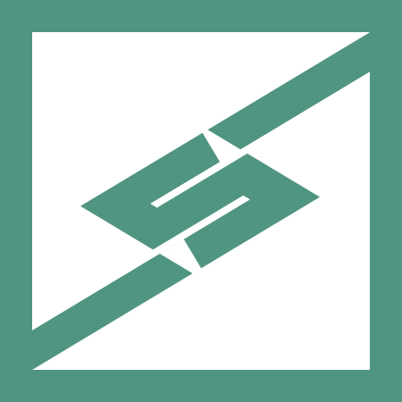
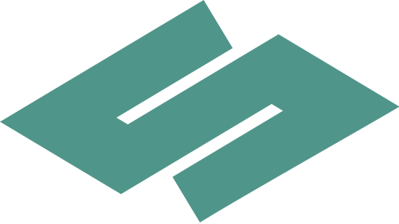

2012 - December 16, 2016
Throughout my entire freelancing career I have been seeking to create a perfect, unique logo to suit my needs. My logo has changed drastically over four years, from a badly designed low-resolution image to a clean and simplistic logo.
When I first started my freelancing career, I went as the alias "Stealth" in order to denote style, speed, secrecy. My first official logo was created using Gimp with the colors red and black. For over two years I made use of this logo, but soon realized that changes had to be made in order to reflect a better and more simplistic website.
I then moved to a more simplistic symbol - something that would represent me while being unique. I chose the letter S as this symbol, representing the first letter in my name. I change my color scheme to something a little more unique, keeping the black background and changing the foreground to a more vibrant orange (Hexidecimal: #ff7400). Although this logo was much more precise, it was not unique or defined enough to suit my needs.
When creating my next logo, I kept the idea of using the letter s as my symbol and work beyond this. I wanted to make this logo distinct by adding a 3-dimensional layer to it. I first created my logo using right angles and straight lines to create a blocky neat feel, made my logo isometric by using 30 and 60 degree angles at each vertice to keep my logo distinct. I made each end of the S stretch farther than the rest of the letter to signify no boundaries in my work. Finally, I added the perspective with a 3-dimensional layer to make it a more well-rounded logo. I chose two shades of blue: the light blue (Hexidecimal: #4d6bf6) as my foreground color and the darker blue (Hexidecimal: #020120) as my background color. I created this using vector graphics and simple math to calculate angles and side lengths.
Drawn out plans for my logo, then the final product following:
In December 2016 I decided to simplify my logo one final time. I did not appreciate the 3-dimensional effect as much as I had hoped and removed it just as quickly. I wanted to make the logo more distinct by adding unique edges or lines to it. I stumbled upon the solution by accident. While editing my vector in Inkscape 0.91, I subtracted paths instead of using the "exclusion" tool. The result placed 90 degree angles on a 30-60 degree isometric shape, producing the sharper distinct edges I was looking for.
After a little refining and moving areas around, I created the logo I was looking for. I used a deep blue/green shade (Hexidecimal: #50958a) against a white background to denote cleanness and freshness. The final products are below.

